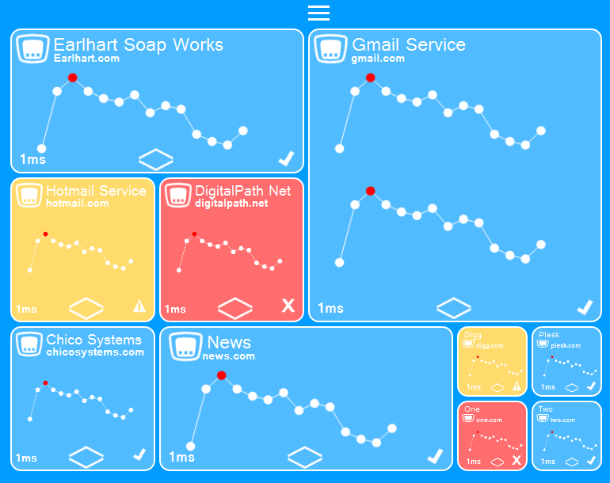
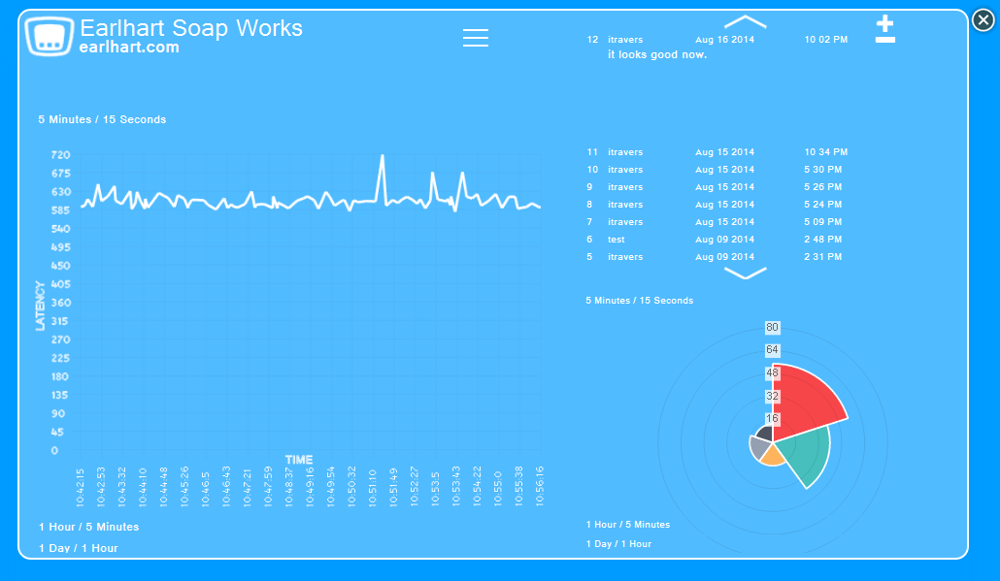

Learn About Hostmon
Installation
We're still working on writing an easy installation script. In the meantime you can just clone our repository to your web server.
$ git clone https://github.com/ChicoSystems/HostMon.git
$ git fetch origin
$ git checkout gh-pages
Requirements
Hostmon only requires a basic LAMP, or WAMP stack. Download this to linux with the following commands.
$ git clone https://github.com/ChicoSystems/HostMon.git
$ git fetch origin
$ git checkout gh-pages
The Main Page
Hostmons Main Page is resposible for monitoring multiple devices at once. From this page you will be able to keep track of the latency for any number of devices. You'll have the option to add/remove devices from the monitor. You will also be able to re-arrange the page as you see fit. If you want to fill up the screen with one or two devices to montitor, you can do that! If you want to monitor a hundred devices on a large screen TV, you can do that! The user can drag and drop or resize the device view as they see fit.
The Device Page
The device page is where the user can monitor individual devices, this page overlays the Main Page and is easy to get rid of if you want to start monitoring all the devices at once. On this page the user will be able to see a variety of information abot the device that they are monitoring. The user can choose from several different line graphs which each give a view of a different timeframe that the device has been being monitored. The user will have the option of three different radial pie charts that give a visual clue as to how much time the device spends in each time category. In addition this is where users can read and add new notes about the devices status.
Contribute
We're currently in a pre-alpha stage and not ready to take code contributions yet. However, if you feel you have something to contribute, go ahead and submit a pull request. It'll be checked out.
Support or Contact
Having trouble with Hostmon? Contact us at ChicoSystems.com or contact chicosystems@github.com and we’ll help you sort it out.